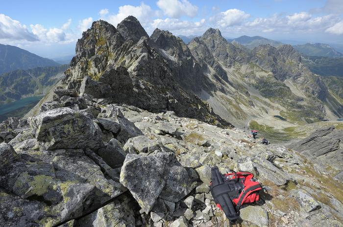

Tatrzański Park Narodowy (TPN) to jeden z 23 parków narodowych w Polsce, położony w południowej części kraju, w województwie małopolskim. Obejmuje polską część Tatr – najwyższego pasma Karpat. TPN jest miejscem szczególnie chronionym, ze względu na swoje wyjątkowe walory przyrodnicze i krajobrazowe.
